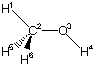

#P amber opt=Z-Matrix geom=connectivity AMBER opt methanol, explicit connectivity 0 1 H-H1- C-CT- 1 r2 O-OH- 2 r3 1 a3 H-HO- 3 r4 2 a4 1 180.0 H-H1- 2 r5 3 a5 1 d5 H-H1- 2 r5 3 a5 1 -d5 r2=1.08105957 r3=1.39956997 r4=0.94629421 r5=1.08744287 a3=107.170012 a4=109.447010 a5=112.035787 d5=118.773010 1 2 1.0 2 3 1.00 5 1.0 6 1.0 3 4 1.0 4 5 6 |  |
#P amber opt=Z-Matrix AMBER opt methanol, no connectivity, no charges 0 1 H-H1- C-CT- 1 r2 O-OH- 2 r3 1 a3 H-HO- 3 r4 2 a4 1 180.0 H-H1- 2 r5 3 a5 1 d5 H-H1- 2 r5 3 a5 1 -d5 r2=1.08105957 r3=1.39956997 r4=0.94629421 r5=1.08744287 a3=107.170012 a4=109.447010 a5=112.035787 d5=118.773010 |
(Enter /scr1/g98/l402.exe) AMBER calculation of energy and first derivatives. MO and density RWFs will be updated. Recover connectivity from rwf. EGHMM: NBAlg=1 ICut=1 CutNB= 1.43D+03 Energy= 0.000793358514 NIter= 0.The energy listed here is that defined through the bonded and non-bonded interactions present in the system, the hypothetical "unstrained" state serving as the zero point of energy.
#P amber opt=nomicro AMBER opt methanol, no connectivity, CHELPG charges 0 1 H-H1-0.04 C-CT-0.36 1 r2 O-OH--0.49 2 r3 1 a3 H-HO-0.17 3 r4 2 a4 1 180.0 H-H1--0.04 2 r5 3 a5 1 d5 H-H1--0.04 2 r5 3 a5 1 -d5 r2=1.08105957 r3=1.39956997 r4=0.94629421 r5=1.08744287 a3=107.170012 a4=109.447010 a5=112.035787 d5=118.773010 |
last changes: 09.11.2006, HZ questions & comments to: zipse@cup.uni-muenchen.de